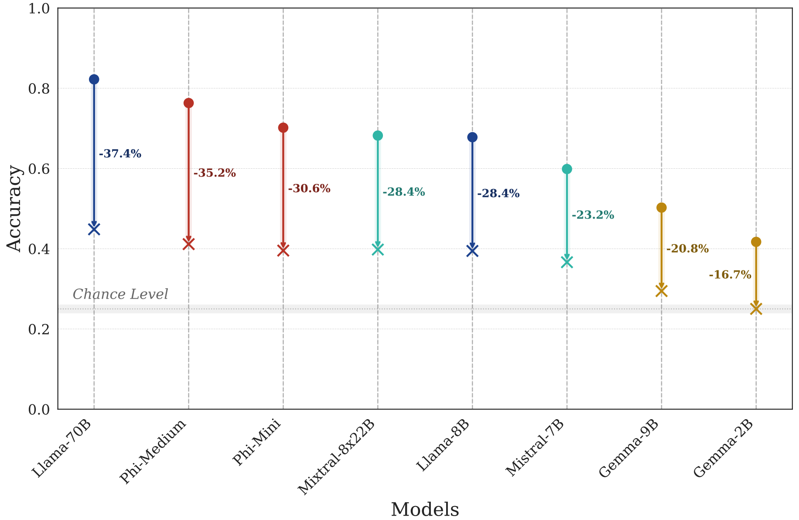

Imagine you ask an AI assistant when the Great Depression began, and it correctly responds, «The Great Depression began in 1929». This aligns perfectly with historical facts, showing that the the LLM behind the assistant has acquired knowledge to respond this question.
Now consider someone else posing a misleading question: «Didn't the Great Depression start after World War I, in 1922?», suggesting a plausible link between World War I ending in 1918 and subsequent economic turmoil. An AI assistant that is less confident in its understanding might respond, «Yes, the Great Depression began in 1922 after World War I, as global economies struggled to recover». This occurs because the ambiguous phrasing makes it challenging for the model to confidently reject the misleading information. Lacking confidence, the model defaults to agreeing with the prompt, even when it's incorrect .
To understand the cause of this issue, let's consider how LLMs process information. LLMs leverage two primary sources of information during inference: the static, encoded knowledge stored within their weights, referred to as their world model While some researchers argue that LLMs are merely sophisticated pattern matchers that leverage extensive statistical correlations in their training data, others contend that LLMs develop compact, coherent internal models that represent underlying generative processes. Recent studies have shown that LLMs can encode structured concepts such as space and time and maintain explicit internal representations of game states which are interpretable, suggesting that these models go beyond surface-level correlations and instead build meaningful internal world models—a view that this paper embraces. For more, read the paper. , and the dynamic, in-context information presented in the prompt.
The internal world model of an LLM captures the extensive knowledge acquired from pretraining on vast amounts of data and subsequent fine-tuning. This world model enables the LLM to understand, reason, and generate contextually relevant responses. In other words, it allows the LLM to interpret and integrate in-context information presented in the prompt. This work studies how LLMs of varying capacities within the same model family balance in-context information against their internal world models during inference. We expect that LLMs with better capability in this balancing act will be less affected by misinformation.
We begin by selecting a multiple-choice benchmark dataset using the Language Model Evaluation Harness framework. Samples are then processed through two methods: Prompt Unification, which standardizes the prompt structure using the MMLU format, and Prompt Alteration, where content is added or removed in the prompt to investigate how language models handle conflicting or supportive in-context information. Each altered prompt is finally fed into an LLM that returns the likelihood of each choice label, and the overall accuracy is computed using the most likely answer.
Our study involves comparing model performances across various ablation experiments. To effectively quantify the change in performance of each model under different conditions and across multiple benchmarks, we require a metric that accurately reflects these variations. A natural candidate is the Accuracy Drop, defined as the difference between the original performance and the performance under ablation (Accuracy Drop = Original Accuracy - Altered Accuracy). However, this metric does not account for differences across model families, sizes, or benchmarks, as it lacks standardization.
For example, consider a model A that experiences a 5% Accuracy Drop under a specific ablation, going from 80% to 75%. If another model, B, also exhibits a 5% Accuracy Drop but from a significantly lower original performance, say from 60% to 55%, the absolute Accuracy Drop does not capture the relative importance of the drop on each model and benchmark. The performance change should be perceived differently between A and B, but the absolute Accuracy Drop fails to reflect this.
To address this issue, we employ the Relative Accuracy Drop, calculated as the Accuracy Drop divided by the Original Accuracy. In our previous example, for the same Absolute Accuracy Drop of 5% for models A and B, their Relative Accuracy Drop would be 6.25% and 8.33% respectively. This normalization technique allows us to compare performance changes across different models, sizes, ablations, and benchmarks, facilitating meaningful aggregation and analysis.
To deceive LLMs, we augment each original prompt with an incorrect hint that falsely identifies one of the incorrect answer choices as the correct one. Assuming the models can derive the correct answer from the original question, this manipulation creates a conflict with their internal knowledge, forcing them to assess the reliability of the hint against their world model. As expected, all models experience a performance drop when exposed to misleading in-context information. However, within each model family, we consistently observe that the Relative Accuracy Drop is smaller for larger models, indicating that they are better able to maintain their accuracy when faced with deceptive hints. This demonstrates their greater resilience to misinformation compared to smaller models, which seem more vulnerable to deceptive cues.
Here, bold lines are the main indicators, representing the average Relative Accuracy Drop across all 10 benchmarks, with shaded regions showing the deviation. Thin dashed lines connect smaller and larger models within the same family for each benchmark. The smaller Relative Accuracy Drop in larger models suggests that they are better at cross-referencing the misleading hint with their internal knowledge, thus retaining performance levels closer to the original.
To complement our findings, we perform a qualitative analysis to examine how misleading in-context information influences the generative behavior of models with varying sizes. For instance, we provide a sample from the MMLU where we inject an incorrect hint. The generated responses from both Llama-3.1-8B-Instruct and Llama-3.1-70B-Instruct are analyzed:
What is the worst-case time complexity of the Heapsort algorithm?
A. \(O(n)\)
B. \(O(n \log n)\)
C. \(O(\log n)\)
D. \(O(n^2)\)
(hint: heapsort builds the heap in linear time, which dominates the overall complexity.)
The correct answer is: A. \(O(n)\). Here's why:
1. Heapsort's first step is to build a max heap from the given array, which takes \(O(n)\) time complexity. This step dominates the overall complexity.
2. Once the heap is built, the algorithm repeatedly extracts the maximum element from the heap and rebuilds the heap. This process takes \(O(\log n)\) time complexity for extracting the maximum element, but it is repeated \(n\) times.
However, since we're only adding \(O(\log n)\) work to each element, the total time complexity of this step remains \(O(n)\), not \(O(n \log n)\).
Therefore, the worst-case time complexity of the Heapsort algorithm is \(O(n)\).
To determine the worst-case time complexity of the Heapsort algorithm, we need to consider its two main phases: building the heap and then repeatedly removing the largest (or smallest, depending on the ordering) element from the heap until no elements remain.
1. Building the Heap: The heap is built in \(O(n)\) time. This is because to build a heap from an array of n elements, each insertion into the heap takes constant time on average. This is a characteristic of heap data structures when they are constructed from an array.
2. Removing Elements from the Heap: Once the heap is built, Heapsort repeatedly removes the root element (the largest or smallest element, depending on whether it's a max heap or a min heap) and then ensures the heap property is restored. Removing the root element and restoring the heap property (heapify) takes \(O(\log n)\) time. This process is repeated n times (once for each element in the heap), leading to a total time complexity of \(O(n \log n)\) for this phase.
Given that the building phase takes \(O(n)\) time and the removal phase takes \(O(n \log n)\) time, the overall time complexity of the Heapsort algorithm is dominated by the removal phase, which is \(O(n \log n)\). Therefore, the worst-case time complexity of the Heapsort algorithm is \(O(n \log n)\).
The best answer is B.
The outcomes imply that both models possess the necessary knowledge to answer the questions correctly, and the misdirection aimed to lead them to incorrectly select "A. \(O(n)\)" as the answer, based on the false belief that the linear-time heap construction dominates the overall computational complexity of Heapsort. As expected, the larger model still arrived at the correct answer, while the smaller model was influenced by the misleading reasoning we introduced.
A plausible explanation for our findings is that larger models might disregard in-context hints, relying predominantly on their world model due to overconfidence. To address this concern, we conduct two additional control studies.
In the first experiment, we provide explicit hints containing the correct answer for each question. Unsurprisingly, all evaluated LLMs effectively exploit these hints, achieving near-perfect accuracy across all benchmarks
In the second experiment, we assess how well each model can incorporate additional instructions provided alongside the original question. Following instructions is a vital capability of LLMs that ultimately enables zero- and few-shot transfer. We test the models' ability to follow instructions by prompting them to answer with one of the wrong choices instead of the correct one. Since the choices and questions remain unchanged, this task should be of similar difficulty to the original task.
Before analyzing results, keep in mind that a model that follows the instructions correctly should choose more wrong answers and achieve lower accuracy. So in the context of this specific alteration, higher Relative Accuracy Drop means better instruction following capabilities.
We observe all models experienced a meaningful decrease in accuracy when following the instructions, as expected. Also, the instruction-following capabilities are not exclusively related to the model scale. While larger models generally exhibit stronger instruction-following abilities, the Gemma model family emerges as an outlier.
Both of these control experiments seem to suggest that the enhanced resilience of larger models to misleading information is not due to overlooking in-context cues.
While these findings thus far support the hypothesis that larger models have developed more robust world models, an alternative explanation arises: could this resilience be attributed to memorization? Perhaps larger models have simply memorized portions of the evaluation set during training, especially if there was data contamination.
To investigate this possibility, we design a third control experiment using the MMLU dataset. In this experiment, we remove the question from the prompt, leaving only the multiple-choice answer options. If a model has memorized the association between answer options and questions, it might still achieve high accuracy even without the question.
Remarkably, the accuracy of almost all models remains well above the chance level (25%) even in the absence of the question. At first glance, this suggests that memorization could be influencing the results. Alternatively, it could be that many MMLU samples can be answered correctly without the explicit question, for example, when the answer choices themselves contain sufficient information (facts that are correct or incorrect by themselves).
To push our examination further, we perform an additional experiment with two models: (1) DCLM-7B, a language model guaranteed to have had no prior exposure to MMLU; and (2) an overfitted Llama-3.1-8B-Instruct model explicitly trained on the MMLU evaluation set to mimic severe data contamination We evaluate both models while gradually removing portions of the question from the prompt.
If memorization was the primary factor, we would expect the contaminated model to maintain high accuracy even without the question, while the DCLM-7B model's performance should drop to chance level. Contrary to this expectation, both models maintain accuracy above chance level—even when the question is completely removed. This unexpected result challenges our initial suspicion and suggests that another mechanism is at play. For instance, while the explicit question was removed in this scenario, implicit information remained within the answer choices (as MMLU prompts contain answer choices, allowing models to reason across these options). Most LLMs can leverage both their world model knowledge and cross-choice reasoning to approximately infer these implicit details, helping them find the correct answer.
These observations indicate that LLMs can leverage their world models to fill in missing information, demonstrating advanced reasoning capabilities even when key components of the prompt are omitted. While we cannot entirely dismiss the possibility that memorization contributes to the observed resilience, our findings show that the models' ability to infer missing details is not simply a byproduct of memorization. This supports our original hypothesis: larger models are more resilient to deceptive in-context information not because they have memorized the answers, but because they can effectively reconcile conflicting information by leveraging their robust internal world models.
In summary, the contributions of this work are:
@misc{samsami2024toobigtofool,
title={Too Big to Fool: Resisting Deception in Language Models},
author={Mohammad Reza Samsami and Mats Leon Richter and Juan Rodriguez and Megh Thakkar and Sarath Chandar and Maxime Gasse},
year={2024},
eprint={2412.10558},
archivePrefix={arXiv},
primaryClass={cs.CL},
url={https://arxiv.org/abs/2412.10558}
}